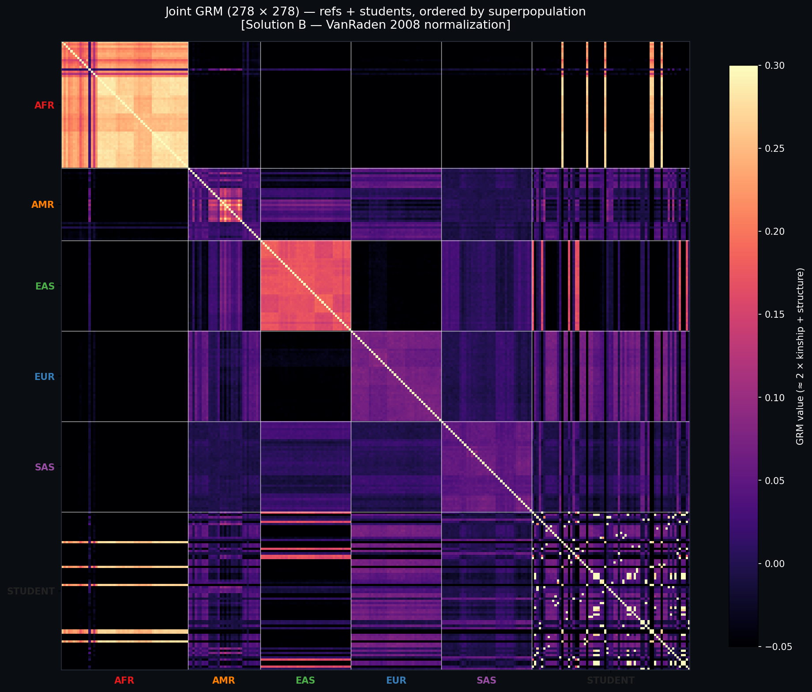
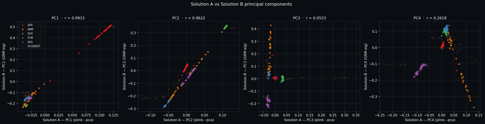
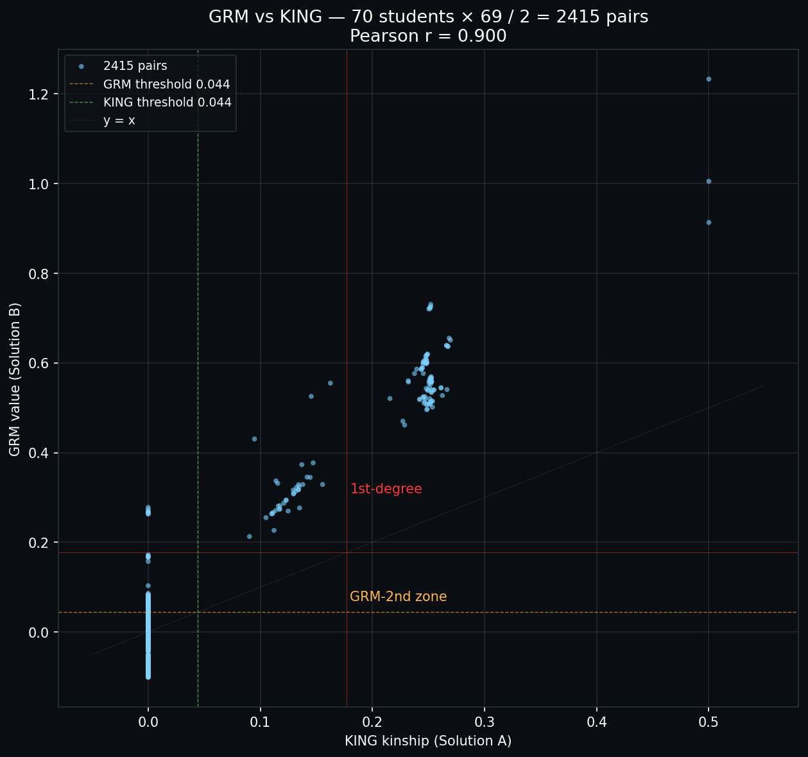
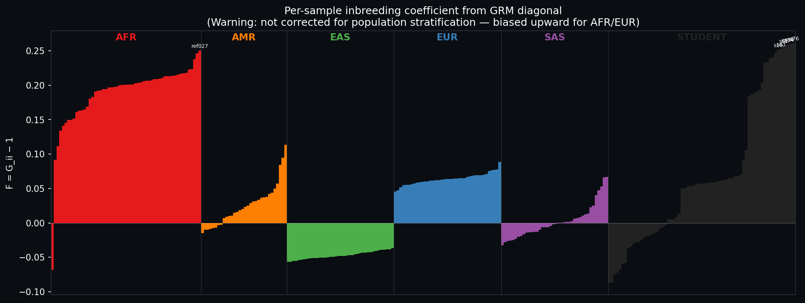

How it differs from Solution A
| Step | Solution A | Solution B (this page) |
|---|---|---|
| Kinship metric | KING-robust (population-stratification-resistant) | VanRaden GRM (inflated by population structure) |
| PCA | Joint plink2 --pca on all 278 samples |
Eigendecomposition of ref-only GRM, students projected |
| Inbreeding F | not computed | Fi = GRMii − 1 |
| Related pair detection | 127 KING pairs (cross-population safe) | 749 student-student GRM pairs (127 match KING) |
| Student influence on PC axes | yes (joint PCA) | no (reference projection) |
3D projected PCA (interactive)
Top 3 eigenvectors of the reference-only 208×208 GRM. Students projected: PCk(s) = (1/√λk) Σi∈ref vki · GRM(s,i). Drag to rotate.
PC1 / PC2 with student labels
Joint GRM heatmap (278 × 278)
Refs + students, ordered by superpopulation. Bright spots inside the bottom-right STUDENT block reveal family relations (parent–child, MZ-twins). Off-block brightness shows each student's closest reference superpopulation.

Solution A vs Solution B principal components
PC1 and PC2 are essentially identical (r ≈ 0.96–0.99). PC3 differs (r = 0.05) — joint PCA's PC3 picked up student-cohort variance, while Solution B's PC3 is purely a 1000G axis. This is exactly why reference-projection is preferred when the new cohort might be admixed.

GRM vs KING — pairwise kinship
2,415 student-student pairs. The left vertical strip (KING = 0, GRM up to +0.27) is population-structure inflation in GRM: unrelated pairs from the same superpopulation get a positive GRM value. The diagonal trend (KING ~ 0.10–0.25, GRM ~ 0.3–0.7) shows GRM ≈ 2 × kinship for actual relatives. The three top-right outliers at KING = 0.5 are the MZ-twin pairs.

Finbreeding per sample
Fi = GRMii − 1. Warning: this estimator is biased by population structure — AFR samples appear "more inbred" simply because their allele frequencies deviate from the joint mean. A bias-free F requires either per-population allele frequencies or ROH-based F.

Takeaway
Use KING for kinship, use GRM-projection for PCA when the new cohort is small or admixed. The two pipelines agree on every actual relative (KING ⊆ GRM); GRM additionally over-calls because of population structure, which is exactly the bias KING-robust was designed to remove (Manichaikul et al. 2010).